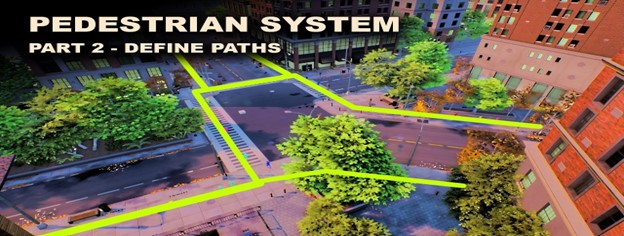
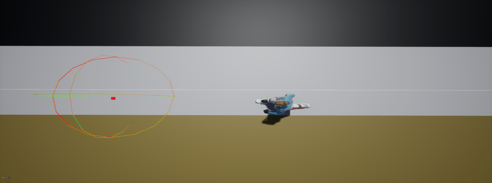
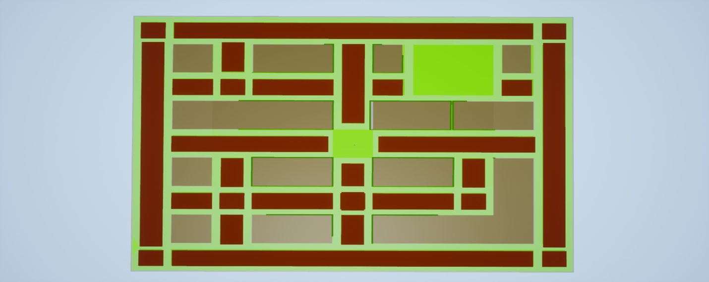
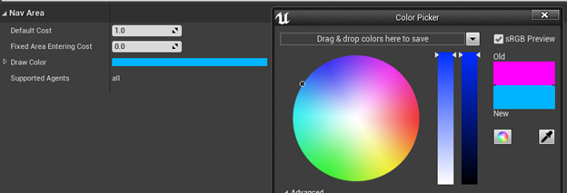
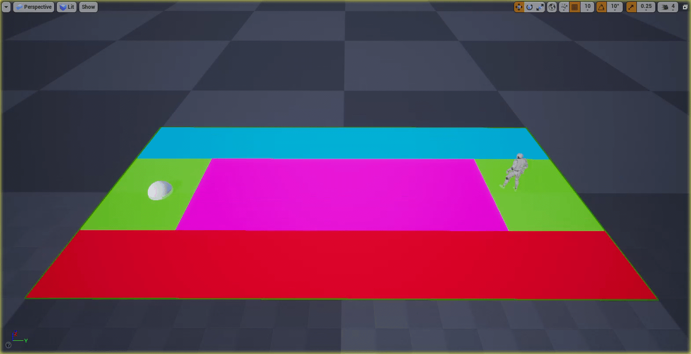
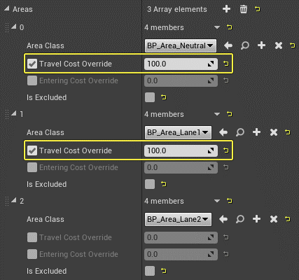
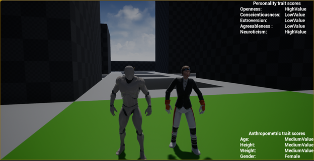

Heterogenous Crowd Simulation
Intro
For my graduation work I attempted to create a heterogeneous crowd simulation in UE4 using trait theory as the main mechanic to diversify the crowd behavior and appearance. On this page I will only focus on the technical aspects of the simulation I created however if you are interested in reading the full paper, please click here to view the full paper. I explain the trait theory in more detail and I show all the research that went into creating the paper and simulation.
Pathing
Pathfinding system
The base of the pathing mechanic is done by creating a custom path outline that the npc's will be able to follow. After doing some research I found a suitable base implementation and converted their implementation into C++ and expanded upon their version to better suit the needs of my crowd simulation. It works simply by placing some splines around the general area where you would like the npc's to walk. Once the simulation starts it will spawn some waypoints which the npc's will use the decide where to walk to.
A thumbnail of one of the videos I used for the base implementation.
Here you can see an npc finding a pathpoint using a sphere raycast.
areas navigation areas
The second main part of the pathing system is the custom navigation areas and how they work with the navigation query filters. I expanded on the basic navigation mesh feature of UE4 by creating a few custom areas that can represent streets, sidewalks, parks, building, etc...
A view of the level navigation mesh.
A look at some of the settings of the custom nav areas.
Custom navigation query filters
Lastly, I also used custom navigation query filters that are closely coupled with the use of the aforementioned UE4 navigation areas. These custom query filters made it possible to customize the cost for certain navigation area types for each npc that had that specific query filter. For example as you can see in the 2 gifs below the same npc with the same navigation areas would always choose to go to the blue path if the query filter made it cheaper for that npc and vice versa. By combining these 2 elements I was able to create some variety within the npc behavior already.
Navigation where the query makes the blue cost lower.
Navigation where the query makes the red cost lower.
A look at some of the settings of the custom query filter.
Steering behaviors
The implementation for most of these steering behaviors is fairly basic. However depending on the individual traits of each npc the blending between these different steering behaviors would become different. Resulting in slightly different behavior for each npc. Also for the avoidance behavior I opted to use the UE4 native RVO avoidance.
Steering behaviors:
- Seek
- Wander
- Cohesion and separation
- Avoidance
A picture of the different steering forces on an npc.

A video of without RVO avoidance in action.

A video of RVO avoidance in action.
Trait theory
As mentioned before both personality and anthropometric traits were implemented in this crowd simulation to create more diversity in both behavior and appearance. If you are interested in finding out how they were researched and applied please take a look at the paper which has been linked in the introduction.
A screenshot of the simulation in action.